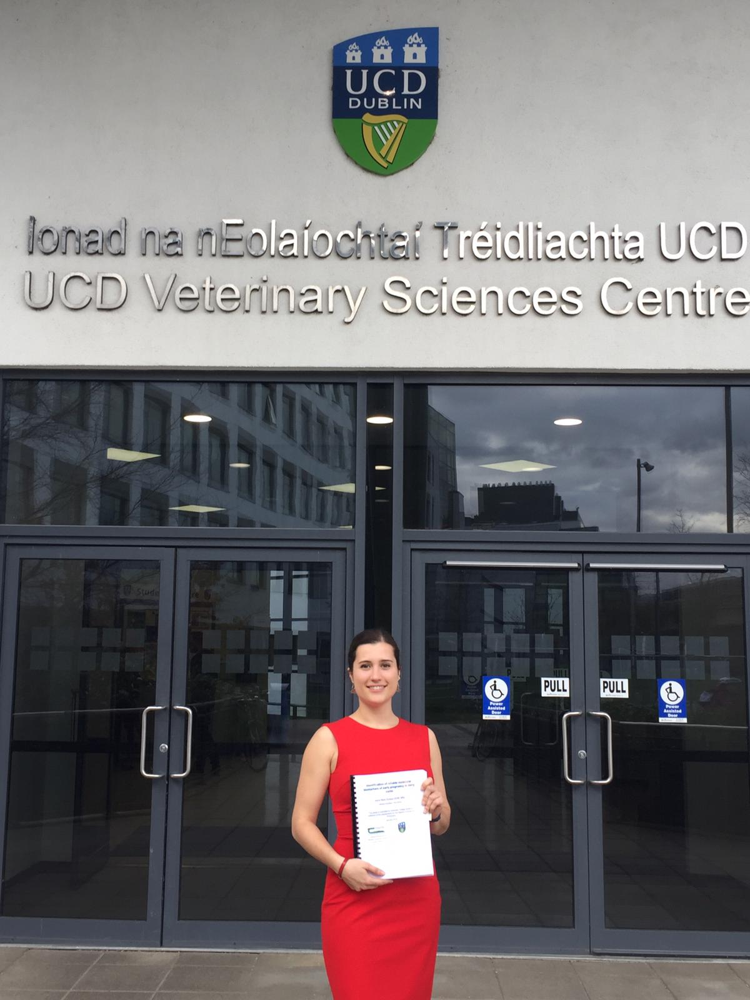

Life and career
Childhood and adolescente
At the age of 15 everything started to change a little bit for me. I have wanted to be a vet since I was very very little. At this age I decided to pursue science more. Furthermore, the circle of friends I have at the moment, they are from the time I was about 15-16 years old. So, I think It was a very good time of life.
Funny but I think I was much more confident than I feel now. Now I look back and I think: “when I was a teenager I really knew what I wanted.” Because right now I find myself hesitating more than I did back then. I think it’s just different moments in life. Everyone changes with time. And I think as a teenager I was very very confident. I knew what I wanted to study, I knew what I wanted to do with my life.

University experience
When you finish your bachelor's degree, you have lots of exams. Definitely it's a massive responsibility to get prepared for them. It feels like a massive load on you. And when you pass them and you go to university you think “Yes, I pass them. I must be super smart. I’m gonna do it”. But when you get to your educational institution you feel very puzzled, you think to yourself: “Okay, okay, where should I go?” When you sit there and the professors at once start talking, you think: ”Oh, I guess now I’m supposed to take notes”. It’s just your first day, and you don't completely know what you are meant to do. You just go there, and you soonly start to feel like a little girl. When you are in secondary school you are the oldest one, but here you are again the little one. But with time, you realise we're all the same.
I have very good memories from uni. It was just completely different from school because it was getting into very specific topics and we had all many different modules. We started doing practicals. I really liked that. You will start with anatomy. On the first day, it was like “OMG, we're actually doing this”. Were looking at the animals or we were in the hospital - it was incredible, we were doing real things, not just studying theory. That was wonderful. We also got more freedom. You’re older, you start getting more friends, you can go out. It just changes.
Gender ratio
Veterinary sciences traditionally were very masculine. Now they are not. I would say between 70-80% were women when I was studying in Zaragoza. In France I think the ratio was more similar. In Ireland there were a few more men but there were still more women.